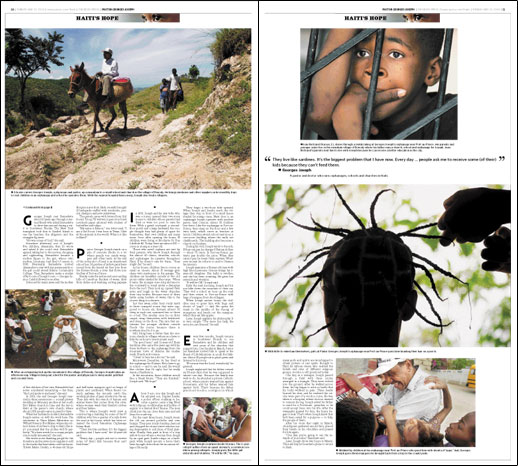

| Haiti's Hope: Pages 10-11. The second page of the Pastor George story concentrates on his weekly trip up to the highlands. The three photos on page 10 are some of the most storytelling in the section. Page 11 is a photo page of other images from the Pastor George story. I concentrated on balancing the size and weight of the images. The face at the top of the page could easily over power the other pictures if the size of the images was not in proportion. |  |
||
| [ BACK | NEXT ] For full size pages: [ DOWNLOAD PDFs ] | |||